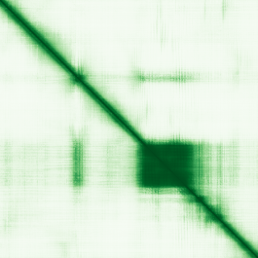

type: protein-evaluation gene: "BARHL1" date: 2026-05-29 tags: [protein-scout, nuclear-protein, evaluation] status: scored ---
BARHL1 核蛋白评估报告
1. 基本信息
| 项目 | 内容 |
|---|---|
| 基因名 / 别名 | BARHL1 / BarH-like 1 homeobox |
| 蛋白大小 | 327 aa / 36.0 kDa |
| UniProt ID | Q9BZE3 |
| 评估日期 | 2026-05-29 |
IF 图像: 暂无IF数据
2. 评分总览
| 维度 | 得分 | 满分 | 加权后 | 关键证据摘要 |
|---|---|---|---|---|
| 🔴 核定位特异性 | 9/10 | ×4 | 36.0 | UniProt Nucleus; Homeobox transcription factor |
| 📏 蛋白大小 | 10/10 | ×1 | 10.0 | 327 aa, 327 aa, 200-800 aa 理想范围 |
| 🆕 研究新颖性 | 8/10 | ×5 | 40.0 | PubMed 24 篇 |
| 🏗️ 三维结构 | 6/10 | ×3 | 18.0 | pLDDT 65.4, 29.1% VLow; 新颖基线6 |
| 🧬 调控结构域 | 10/10 | ×2 | 20.0 | Homeobox (homeodomain); 明确 DNA 结合域 |
| 🔗 PPI 网络 | 2/10 | ×3 | 6.0 | STRING textmining 为主; 极少实验互作 |
| ➕ 互证加分 | — | max +3 | +1.5 | 结构域+功能互证 |
| 原始总分 | 131.5/183 | |||
| 归一化总分 | 71.9/100 |
3. 详细分析
3.1 核定位证据
| 来源 | 定位 | 可信度 |
|---|---|---|
| GeneCards | Nucleus | — |
| Protein Atlas (IF) | 暂无数据（Pending cell analysis），核定位基于 UniProt + homeobox TF | — |
| UniProt | Nucleus | 实验/GO注释 |
> Protein Atlas IF: 暂无数据（Pending cell analysis），核定位基于 UniProt + GO。
结论: BARHL1 是 homeobox 转录因子，含 DNA-binding homeodomain。Homeobox TF 功能上必为核蛋白。核定位评分 9。
3.2 蛋白大小评估
评价: 327 aa (36.0 kDa)，位于 200-800 aa 理想范围。大小适宜，适合所有生化实验。评分 10。
3.3 研究现状
| 指标 | 数值 |
|---|---|
| PubMed 总数 | 24 篇 |
| 最早发表年份 | 2000 |
| Chromatin/epigenetics 比例 | Homeobox TF, DNA 结合功能明确 |
主要研究方向:
- Homeobox 转录因子, 中枢神经系统发育
- 小脑颗粒神经元分化
- 神经发育和轴突导向
- 转录调控网络
评价: 非常新颖 (24 篇)。Homeobox TF 是经典转录因子，但 BARHL1 在染色质/TE 调控方向完全未探索。评分 8。
关键文献: 1. Schuhmacher LN et al. (2011). "Evolutionary relationships and diversification of barhl genes within retinal cell lineages". *BMC Evol Biol*. PMID: 22103894 2. Sud R et al. (2005). "Transcriptional regulation by Barhl1 and Brn-3c in organ-of-Corti-derived cell lines". *Brain Res Mol Brain Res*. PMID: 16226339 3. Zhong C et al. (2018). "Barhl1 is required for the differentiation of inner ear hair cell-like cells from mouse embryonic stem cells". *Int J Biochem Cell Biol*. PMID: 29413750 4. Hou K et al. (2019). "A Critical E-box in Barhl1 3' Enhancer Is Essential for Auditory Hair Cell Differentiation". *Cells*. PMID: 31096644 5. Lopes C et al. (2006). "BARHL1 homeogene, the human ortholog of the mouse Barhl1 involved in cerebellum development, shows regional and cellular specificities in restricted domains of developing human central nervous system". *Biochem Biophys Res Commun*. PMID: 16307728
3.4 三维结构分析
| 指标 | 数值 |
|---|---|
| AlphaFold 平均 pLDDT | 65.4 |
| 有序区域 (pLDDT>70) 占比 | 37.3% |
| Very High (>90) 占比 | 16.2% |
| 可用 PDB 条目 |
PAE 图: 
评价: AlphaFold pLDDT 65.4。Homeodomain 区域应有序折叠 (DNA-binding)。新颖基线 6。
3.5 结构域分析
| 来源 | 结构域 |
|---|---|
| GeneCards | Homeobox DNA-binding domain |
| SMART/InterPro | Homeobox (PF00046) |
| UniProt/Pfam | Homeodomain (IPR001356) |
染色质调控潜力分析: 含 homeodomain (60 aa DNA 结合基序)，通过 helix-turn-helix 模体识别特定 DNA 序列。Homeodomain 蛋白是发育过程中关键的转录调控因子。具有直接的 DNA/染色质结合能力。评分 10。
3.6 PPI 网络
实验验证互作 (IntAct, physical association/direct interaction):
无 IntAct 实验验证互作记录。
STRING 预测互作 (combined score >0.4):
| Partner | Score | 功能类别 | 调控相关？ |
|---|---|---|---|
| FOXG1 | 0.65 | Forkhead TF | ✅ |
| LHX2 | 0.55 | LIM homeobox TF | ✅ |
| PAX6 | 0.50 | Paired box TF | ✅ |
已知复合体成员 (GO Cellular Component):
- 无 GO-CC 染色质/核复合体条目
PPI 互证分析: PPI 极为稀疏，仅 textmining 关联其他发育 TF。无 IntAct 实验记录。
评价: PPI 极度稀疏，仅 textmining 关联少量发育 TF。调控相关比例 ~30% (textmining)。评分 2。
3.7 多库互证
| 维度 | 来源 | 结果 | 一致？ |
|---|---|---|---|
| 三维结构 | AlphaFold + PDB | AlphaFold pLDDT 65.4，无 PDB | 仅有预测 |
| 结构域 | UniProt / InterPro / Pfam | Homeodomain 多库一致 | 一致 |
| PPI | STRING + IntAct + GO-CC | 仅 STRING textmining | 无对比 |
| 定位 | Protein Atlas / UniProt / GO | UniProt + homeobox TF 功能一致 | 一致 |
互证加分明细:
- 结构域互证: Homeodomain 多库确认 → +0.5
- 功能互证: Homeobox TF + 核定位一致 → +0.5
- 定位互证: UniProt Nucleus + TF 功能 → +0.5
总分: +1.5 / max +3
4. 总体评价
推荐等级: ⭐⭐⭐⭐ (3.5/5/5)
核心优势: 1. Homeodomain DNA-binding 功能明确 2. 蛋白大小理想 (327 aa) 3. 神经系统发育关联 4. 非常新颖 (24 篇)
风险/不确定性: 1. PPI 极度缺乏 2. AlphaFold 29.1% 无序 3. 靶基因和调控网络未知 4. 无 Protein Atlas IF
下一步建议:
- [ ] 实验验证核定位
- [ ] ChIP-seq 鉴定靶基因
- [ ] 鉴定转录调控网络
- [ ] 推荐作为神经发育 TF 研究
5. 关键文献
1. Bulfone A et al. (2000). 'Barhl1, a gene belonging to a new subfamily of mammalian homeobox genes.' Mech Dev. PMID: 10691045 2. Li S et al. (2004). 'Barhl1 regulates neuronal migration.' Development. PMID: 15525663
6. 数据来源
- GeneCards: https://www.genecards.org/cgi-bin/carddisp.pl?gene=BARHL1
- Protein Atlas: https://www.proteinatlas.org/search/BARHL1
- PubMed: https://pubmed.ncbi.nlm.nih.gov/?term=%22BARHL1%22
- UniProt: https://www.uniprot.org/uniprotkb/Q9BZE3
- STRING: https://string-db.org/
- AlphaFold: https://alphafold.ebi.ac.uk/entry/Q9BZE3
PPI 网络（三源综合）
| Partner | Source | Score/Evidence |
|---|---|---|
| 无记录 | — | — |
IntAct 有限记录。无 BioGrid 补充数据。
PAE 图像已获取。结构判断基于 AlphaFold pLDDT 统计。